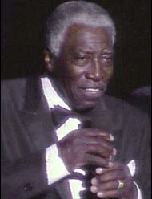

JOE WILLIAMS
(урожденный Joseph Goreed, 12 декабря 1918,
Кордел, Джорджиа - 29 марта 1999 Лас Весас)
 |
Американский
блюзовый и джазовый певец; его красивый баритон,
один из самых ярких и сочных голосов
бигбэндового блюза (блюза с большим оркестром),
пел джазовый темы, баллады и блюзы с непременной
для "шаутера" силой - и редкой, неповторимой
нежностью. В 90-х гг. Уилльямс записывал, в
основном, альбомы духовной музыки: спиричуэлс и
госпелл - как в традиционной, так и в современных
аранжировках. |
Родившийся в Джорджии, Джо Уилльямс
рос в Чикаго с 4-хлетнего возраста. Подростком пел
госпелл в церковных хорах, затем выступал с
гастролирующей вокальной группой "The Jubilee
Boys". Профессиональный дебют в 1937г. Исполнять
джаз начал в 30-х годах. Выступал с оркестрами
джазовых звезд, в т.ч., Коулмена Хокинса; а так же с
гениями бугивужного ф-но: Албертом Эммондсом и
Питом Джонсоном. В 1943г. Уилльямс работал
охранником на входе знаменитого чикагского REGAL
THEATRE, что помогло ему познакомиться лично со
многими выдающимися джазовыми артистами (!). По
рекомендации менеджера "Ригал", он получил
работу в оркестре Лайонела Хэмптона и работал в
паре с другой выдающейся джаз-блюзовой певицей,
Дайаной Уашингтон. Дебютная запись в 1946г.; до
начала 50-х записывался под именем JUMPIN' JOE WILLIAMS. В
1950г. выступал с септетом Каунта Бейси. В 1952г.
записал собственную версию песни Мемфиса Слима
под названием, данным ей Лоуэллом Фулсоном -
"Каждый день со мною блюз" - в сопровождении
оркестра Кинга Колакса. Песня поднялась в первую
ритмэндблюзовую десятку хит-парада. В 1954г.
присоединился к оркестру Каунта Бейси.
 |
Союз Бейси и Уилльямса для
своего времени был и своеобразным стилевым
возвращением на один-два десятка лет назад, к
временам славы биг-бэндов и блюзовых
"крикунов" (shouter), и, одновременно, движением
вперед, поскольку исполнительские приемы этих
стилей подверглись основательным переработкам и
обновлению. Им удалось великолепно сочетать
лучшее в блюзе и джазе, и органичность их
совместных выступлений лишний раз подтверждает
глубокое родство джаза и блюза. Результатом того
реформационного возвращения к корням был
огромный творческий успех, подтвержденный и
коммерчески. Они много гастролируют по США и
Европе, часто выпускают пластинки. Теперь, годы
спустя, совместные работы Бейси и Уилльмса
окончательно признаны лучшими в идиоме
бигбэндового блюза. |
Хотя и позже они продолжали часто
выступать и записываться, но официально Джо
Уилльямс вышел из оркестра Каунта Бейси в 1961г. В
60-х Уилльямс часто включает в свой репертуар
поп-музыку, часто появляется на телеэкранах в шоу
и мыльных операх. Но регулярно выступает и на
джазовых и блюзовых фестивалях. В 80-х он играет в
популярнейшем сериале NBC "Косби-Шоу". В 1985г.
его альбом "Ничего, кроме блюза" удостоен
премии "Грэмми" за лучший мужской джазовый
вокал.
Джо Уилльямс продолжал выступать до
последних лет жизни. "Я приятно удивлен тем, на
что еще способен мой голос, - сказал он в 1986г.- Я
рад и полон благодарности. Я помню, как Эдуард
(Дюк Эллингтон), говорил: "Я всего лишь у Бога на
посылках". Много, из того, что люди делают,
только проходит через нас. Я благодарен Богу за
то, что проходит через меня."
Последний концерт Джо Уилльмса был
назначен на 7 мая 1999г.
 "В начале
начал" на музыку Дюка Эллингтона - из альбома
Джо Уилльямса 1995г.
"В начале
начал" на музыку Дюка Эллингтона - из альбома
Джо Уилльямса 1995г.
В сети:
с интервью в ram: http://www.gallery41.com/artists/joe_w1.htm
джаз-профиль: http://www.goldcoastjazz.org/joe.html
неофициальная (но оч.хорошая) страница: http://eqgate.kuciv.kyoto-u.ac.jp/~yos/joe/joe.html